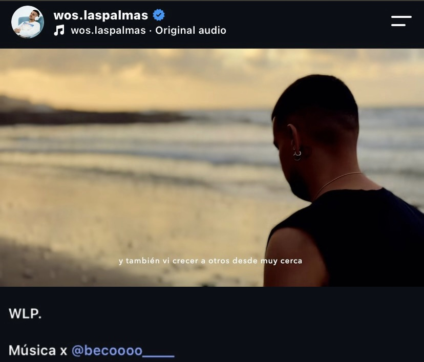

SISTEMES
Instal·lació i configuració de sistemes operatius, manteniment d'equips i entorns virtualitzats.
ESTUDIANT DE SMX
IT · XARXES · CIBERSEGURETAT
Soc Jan Masqué, estudiant de Sistemes Microinformàtics i Xarxes amb interès pel món de la tecnologia, les xarxes i la ciberseguretat.
Em considero una persona jove, responsable, amb ganes d'aprendre i amb facilitat per adaptar-me a nous entorns i projectes.
Paral·lelament als estudis, també desenvolupo una faceta creativa dins del món de la música sota el nom artístic BECO, principalment com a beatmaker i productor musical.
Instal·lació i configuració de sistemes operatius, manteniment d'equips i entorns virtualitzats.
Coneixements de xarxes locals, configuració bàsica, dispositius de xarxa i resolució d'incidències.
Muntatge, identificació de components, manteniment i diagnosi bàsica d'ordinadors.
Creació de webs, estructura HTML, CSS i eines modernes de desenvolupament assistit per IA.
Ús d'eines ofimàtiques, gestió de documents, dades i organització d'informació.
Experiència en producció musical, branding, projectes digitals i desenvolupament d'idees creatives.
Desenvolupament d'una web per a la reserva de serveis de producció musical.
El sistema permet que l'artista o client ompli un formulari i que la informació quedi registrada en una base de dades de Notion.
Projecte d'IoT basat en una ESP32 per crear un sistema de reg intel·ligent.
El projecte incorporarà sensors per controlar la humitat i altres dades de les plantes, adaptant el reg segons les necessitats.
Experiència com a beatmaker i productor musical sota el nom artístic BECO.

Una de les produccions més destacades dins de la meva experiència com a productor musical.
Vaig ser responsable de la creació del beat i de la producció musical del tema.
El projecte acumula més de 280K reproduccions a YouTube.

Participació en la producció musical del vídeo announcement del projecte més recent de Wos Las Palmas.
Vaig realitzar el beat i la producció vocal de la peça audiovisual.
El vídeo va formar part de l'anunci del tancament d'una etapa del projecte.
El meu objectiu professional és continuar formant-me dins del sector de la informàtica i especialitzar-me progressivament en l'àmbit de la ciberseguretat.
M'interessa especialment la part relacionada amb les xarxes, els sistemes, la seguretat dels dispositius i la detecció i resolució d'incidències.
Consolidar els coneixements de sistemes i xarxes.
Realitzar pràctiques i adquirir experiència real en un entorn informàtic.
Continuar la formació orientada a la ciberseguretat.
Formació secundària obligatòria.
Inici del Grau Mitjà de Sistemes Microinformàtics i Xarxes.
Consolidació de coneixements i desenvolupament de projectes tecnològics.
Continuïtat formativa i especialització en seguretat informàtica.
La meva comunicació professional es basa en mostrar els projectes que desenvolupo i mantenir una presència digital clara.
Espai per mostrar projectes i experiència.
Publicació i organització de projectes tècnics.
Desenvolupament de la meva identitat professional.
El meu objectiu és combinar formació, experiència i projectes personals per construir progressivament el meu perfil professional.
Actualment estic en una etapa de formació, però ja he començat a desenvolupar projectes reals tant dins com fora de l'àmbit acadèmic.
GET IN TOUCH
Estudiant de SMX · Futur professional de la ciberseguretat · BECO